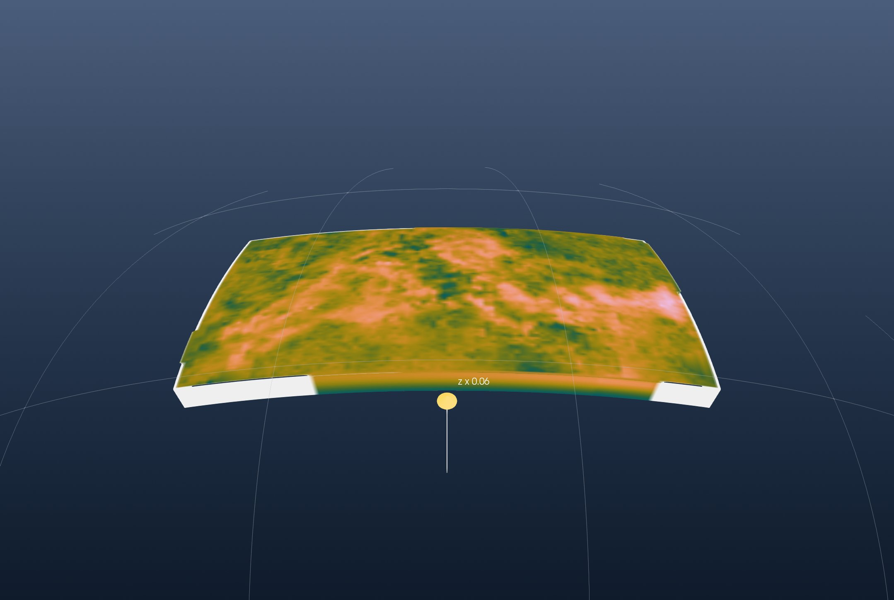
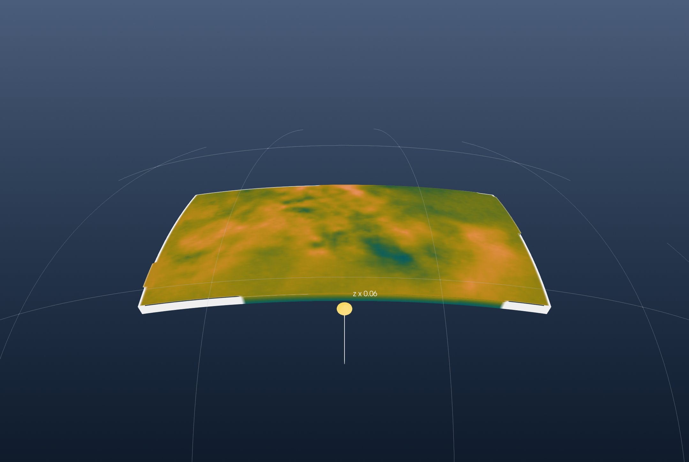

Tutorial: A Tomography Model from netCDF
This is the GeophysicalModelGenerator.jl tutorial 3D tomography model in netCDF format redone with iGMT and plain GMT.jl commands: no NetCDF.jl, no GMG, no ParaView.
The model is MeRE2020, the shear-wave velocity of the Mediterranean upper mantle by El-Sharkawy et al. (2020, The Slab Puzzle of the Alpine-Mediterranean Region, G³), from the EarthScope (formerly IRIS) Earth Model Collaboration.
1. Read the model
The netCDF file has one variable, Vs in km/s, on 100 longitudes, 100 latitudes and 301 depths from 50 to 350 km:
using GMT, InteractiveGMT
download("https://data.earthscope.org/archive/seismology/products/emc/netcdf/El-Sharkawy-etal-G3.2020-MeRE2020-Mediterranean.r0.0-n4c.nc",
"MeRE2020.nc")GMG reads each variable with NetCDF.jl and assembles the 3-D coordinates itself. gmtread with layers=:all reads the whole file as one cube, coordinates included. The file's longitude and latitude steps vary slightly; GMT warns once per layer and uses their mean, and V=:q keeps it quiet:
C = gmtread("MeRE2020.nc", layers=:all, V=:q)The cube spans 11.3° W to 46.3° E and 28.9° N to 51.1° N, and Vs runs from 3.9 to 5.04 km/s.
GMG colours it with a scale from pink (slow) to dark blue (fast); GMT's batlow, reversed, is that scale:
cpt = makecpt(cmap=:batlow, range=(3.9, 5.1), reverse=true)2. The block
GMG shows the model as a solid block on the curved Earth, its outer faces coloured by Vs. Its top is the first layer, at 50 km, cut out by slicecube and turned into a picture by grdimage:
L50 = slicecube(C, 1)
img50 = grdimage(L50, cmap=cpt, A=true)The top face is a flat grid 50 km down, wearing that picture:
top = grdmath("? 0 MUL -50000 ADD", L50)The four side faces are the cube's outer rows and columns, each a depth section. mat2grid makes each one a grid and grdimage its picture:
south = grdimage(mat2grid(permutedims(C.z[1, :, :])), cmap=cpt, A=true)
north = grdimage(mat2grid(permutedims(C.z[end, :, :])), cmap=cpt, A=true)
west = grdimage(mat2grid(permutedims(C.z[:, 1, :])), cmap=cpt, A=true)
east = grdimage(mat2grid(permutedims(C.z[:, end, :])), cmap=cpt, A=true)GMG draws the model on the sphere, and so does iGMT's globe view. A globe's vertical scale comes from the window's own grid, so the window opens on the region's topography, which also sets the block's depths in metres, and the top face stands on the same scale (samezscale=true):
Topo = grdcut("@earth_relief_05m", region=(-11.3, 46.3, 28.9, 51.1))
fig = iview(Topo; cmap=:oleron)
add!(fig, top; name="Vs at 50 km", drape=img50, samezscale=true)The side faces hang as curtains along the block's edges, from 350 km to 50 km deep. A section's first row is its shallowest, drawn at the bottom of its picture, so flipv=true turns it upright:
add_curtain!(fig, [-11 29; 46 29]; image=south, zrange=(-350000, -50000), flipv=true)
add_curtain!(fig, [-11 51; 46 51]; image=north, zrange=(-350000, -50000), flipv=true)
add_curtain!(fig, [-11 29; -11 51]; image=west, zrange=(-350000, -50000), flipv=true)
add_curtain!(fig, [46 29; 46 51]; image=east, zrange=(-350000, -50000), flipv=true)GMG's figure shows the model alone, so the topography is switched off:
setvisible!(fig, "Surface", false)Pick Globe (orthographic) from the arrow of the toolbar's 2D/3D button. View → Vertical Exaggeration… set 0.063, close to true scale for this topography, on Vs at 50 km and on the topography. Turn the globe to look at the block from the south:

This is GMG's first figure. On the top face, at 50 km, the slowest mantle (3.91 km/s) is under eastern Anatolia (42.5° E, 39.4° N) and the fastest (4.85 km/s) at 28.1° E, 47.4° N, on the edge of the East European platform. The sides show Vs rising with depth. The white bands are where the model has no values along its edges.
3. The model below 200 km
GMG's second figure keeps the part of the model below a sphere 200 km under the surface. The same view here is the block below 200 km: layer 151 is the 200 km layer, and the walls are the same sections from their 151st row down:
L200 = slicecube(C, 151)
img200 = grdimage(L200, cmap=cpt, A=true)
top200 = grdmath("? 0 MUL -200000 ADD", L200)
south2 = grdimage(mat2grid(permutedims(C.z[1, :, 151:end])), cmap=cpt, A=true)
north2 = grdimage(mat2grid(permutedims(C.z[end, :, 151:end])), cmap=cpt, A=true)
west2 = grdimage(mat2grid(permutedims(C.z[:, 1, 151:end])), cmap=cpt, A=true)
east2 = grdimage(mat2grid(permutedims(C.z[:, end, 151:end])), cmap=cpt, A=true)
fig2 = iview(Topo; cmap=:oleron)
add!(fig2, top200; name="Vs at 200 km", drape=img200, samezscale=true)
add_curtain!(fig2, [-11 29; 46 29]; image=south2, zrange=(-350000, -200000), flipv=true)
add_curtain!(fig2, [-11 51; 46 51]; image=north2, zrange=(-350000, -200000), flipv=true)
add_curtain!(fig2, [-11 29; -11 51]; image=west2, zrange=(-350000, -200000), flipv=true)
add_curtain!(fig2, [46 29; 46 51]; image=east2, zrange=(-350000, -200000), flipv=true)
setvisible!(fig2, "Surface", false)Switch to Globe (orthographic), set the same vertical exaggeration, 0.063, and the same view:

At 200 km the fastest mantle (4.81 km/s) is south of Crete (25.8° E, 35.4° N), where the African plate sinks under the Hellenic arc. The fastest 5 % of the layer lies there, under the Alps and north of the Black Sea.